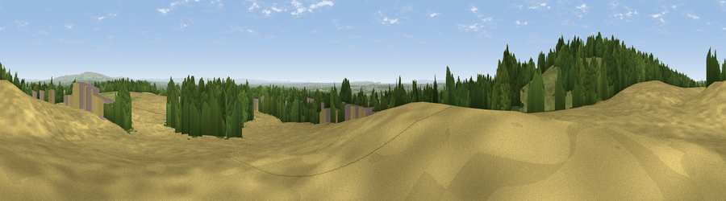

Viewpoint near Billinge
#6769 in England · top 16% of its area beats it · near BillingeThe view, rendered

A 360° render of this exact spot computed from the terrain model, tree cover and land cover — summer colours, afternoon light, calibrated against photographs of famous viewpoints. Real trees, hedges and buildings will differ in detail.
The panorama
Grey silhouette: terrain skyline in each direction (720 bearings, Earth curvature and refraction included). Dashed green: skyline with trees (+15 m) and buildings (+8 m) as obstacles. Blue strip: how far the ground is visible on each bearing.
Where the view opens
Wedge length = distance to the farthest visible ground on that bearing (vegetation-aware). Rings at 10, 25 and 50 km.
What fills the view
45% cropland · 24% woodland · 21% grassland · 9% built-up
Angular shares of the visible panorama (visual magnitude), not map area. Landscape diversity 0.55 (0–1 Shannon).
Key numbers
More beautiful places nearby
The staircase of upgrades: each row has a higher view potential than everything closer. Driving times are estimates from straight-line distance, calibrated against real road routing — check an actual route before setting out.
| Place | Direction | Drive | Score |
|---|---|---|---|
| Billinge Hill | WNW · 1 km | ~2 min | 73.8 |
| Viewpoint near Dalton | NNW · 7 km | ~15 min | 74.2 |
| Rivington Pike | NE · 17 km | ~29 min | 81.9 |
| White Brow | NE · 17 km | ~30 min | 82.9 |
| Warton Crag | N · 72 km | ~95 min | 83.2 |
| Viewpoint near Grange-over-Sands | N · 78 km | ~102 min | 83.4 |
| Viewpoint near Cartmel | NNW · 80 km | ~104 min | 87.0 |
| Viewpoint near Cartmel | NNW · 80 km | ~104 min | 87.2 |
53.50538, -2.70972 · source: screening · position refined by local search. Computed location — check access rights before visiting.